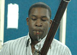
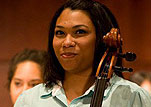

FEATURED EVENT
Workshop. The Atlanta Music Project AMPlify Choral Workshop Information Thank you for your interest! Information on AMPlify Workshops will be presented here.
WHAT'S NEW
Live Auditions! So happy we can provide our kids with this once-in-a-lifetime opportunity! Learn more: http://atlantamusicproject.org/amp-orchestral/amp-academy/ … 22h ago
ORCHESTRA TEACHER ARTIST
While trained at some of the world’s greatest music schools, AMP Teaching Artists are more than just first-rate performers. The AMP Teaching Artists are musicians with social change in mind, with the desire to pass on their talent and art to the next generation and with the ability to play a role in youth and community development. Honing their craft by day and showcasing it in concerts by night, the AMP Teaching Artists spend their afternoons in some of Atlanta’s most disadvantaged communities teaching the young students of the Atlanta Music Project so they can in turn inspire social change in their communities through their own musical abilities and concerts. For more about AMP Teacher Artist click here...
 Dantes Rameau, Born in Ottawa, Canada, bassoonist Dantes Rameau is of Haitian and Cameroonian descent. He is a member of the first class of Abreu Fellows at the New England Conservatory. As an Abreu Fellow Dantes spent one year studying El Sistema including two months in Venezuela where he taught, performed and observed. During the Abreu Fellow Program he co-founded the Atlanta Music Project.
 Kelly King, a native of Florence, SC, began her musical journey on
piano at the age of 7, followed by a brief stint in voice lessons,
and finally settling on viola. Kelly holds a Bachelor of Music from
the University of South Carolina, studying with Frits de Jonge. She
then received her Master of Music degree and Artist Diploma from the
University of Cincinnati’s College-Conservatory of Music, studying
with Catharine Carroll and Masao Kawasaki. After graduating from
Cincinnati Kelly spent a year in Chicago playing with the Civic Orchestra
of Chicago and teaching at the YOURS project, an El Sistema-inspired
program.
Kelly King, a native of Florence, SC, began her musical journey on
piano at the age of 7, followed by a brief stint in voice lessons,
and finally settling on viola. Kelly holds a Bachelor of Music from
the University of South Carolina, studying with Frits de Jonge. She
then received her Master of Music degree and Artist Diploma from the
University of Cincinnati’s College-Conservatory of Music, studying
with Catharine Carroll and Masao Kawasaki. After graduating from
Cincinnati Kelly spent a year in Chicago playing with the Civic Orchestra
of Chicago and teaching at the YOURS project, an El Sistema-inspired
program.
 Jessica started cello at the age of 9 and pursed a Bachelors degree with the late Wolfgang Laufer at University of Wisconsin-Milwaukee. After having her two kids, Taylor and Claire, she decided Martha Gerschefski at Georgia State University would be a great fit for her Masters in Cello Performance. She has participated in numerous International Music Festivals and performed solo masterclasses for famous cellists such as Norman Fisher, Evan Drachman, Stefan Kartman, Hans-Jorgen Jensen, Darrett Adkins, Mihai Tetel, Timothy Eddy, Andres Diaz, and Yo-Yo Ma. Her teaching experience encompasses private cello lessons to large classroom string settings in multiple counties within Georgia.